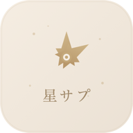

✦ 星のサプリ ✦ 今日もあなたに、小さな後押しを。 ✦ Hoshi no Supli ✦
✦ 星のサプリ ✦ 今日もあなたに、小さな後押しを。 ✦ Hoshi no Supli ✦

星のサプリ
✦ 毎朝届くやさしいホロスコープ ✦
✧ ✦ ✧ ✦ ✧ ✦ ✧
★ APP DETAIL ★
📖 アプリ概要
星のサプリは、12星座の運勢を毎朝AIが生成するホロスコープWebアプリです。
「やさしい先輩のような語りかけ」をトーンに、日常の小さなシーンに星の後押しを添えます。読んだ後「よしっ」と前向きになれる温度感を目指しています。石井ゆかりさんのやさしさをベースに、もう少しライトに。
💡 コンセプト
- ネガティブな表現は一切なし（低運の日も「充電日」「整える日」として肯定）
- 占星術の専門用語は使わない（アスペクト、ハウス等NGワード）
- 必ず日常の具体的なシーンを1つ以上含める
- ラッキーアイテムは手に取れる身近なもの
- ランキング・順位の概念は使わない
🚀 ユーザーフロー
STEP 1
✦
トップ画面
12星座グリッドから選択
12星座グリッドから選択
STEP 2
📅
期間タブ切替
今日・今週・今月
今日・今週・今月
STEP 3
🔮
占い表示
メッセージ＋運勢ドット
メッセージ＋運勢ドット
STEP 4
🍀
ラッキー情報
アイテム・カラー・ナンバー
アイテム・カラー・ナンバー
STEP 5
📤
シェア
X・LINE・コピー
X・LINE・コピー
⚡ 主な機能
- 12星座 × 3期間（今日・今週・今月）の占い
- Claude APIによる占い文の毎朝自動生成（Vercel Cron）
- 5項目の運勢メーター（総合・恋愛・仕事・金運・健康）
- ラッキーアイテム・ラッキーカラー（HEXコード付き）・ラッキーナンバー
- 日英2言語対応（ブラウザ言語自動検出 + 手動切替）
- Framer Motionによるスタガーアニメーション
- APIフォールバック（Supabase/Claude API不通時でも動作）
- CDNキャッシュ（1時間）でパフォーマンス最適化
- PWA対応（ホーム画面に追加可能）
🛠 技術スタック
✦ こだわりポイント
- AIプロンプト設計 ― 「やさしい先輩」のトーン、NGワード、文字数、JSON出力形式まで細かく定義。日本語/英語で異なるプロンプトを用意し、文化に合った表現を生成
- グラスモーフィズム + 和のテイスト ― すりガラス風カードにゴールドのアクセント。Cormorant Garamond × しっぽり明朝のフォントペアリングで、上品かつ温かい世界観
- 運勢ドットのスタガーアニメーション ― 5項目の運勢メーターが順番にふわっと現れる演出。Framer MotionのstaggerChildrenで0.08秒ずつずらした入場
- 堅牢なフォールバック設計 ― Supabase未接続・Claude API障害時でも、ハードコードされたフォールバック占い文で必ず表示。ユーザーに空白画面を見せない
- Cron自動生成 ― Vercel Cronが毎朝5時（JST）にClaude APIで12星座分を一括生成。リトライ・バックオフ・フォールバック挿入まで自動化
💭 つくってみて
占い文のトーン設計が一番楽しかったポイントです。AIに「やさしい先輩」を演じてもらうためのプロンプトを何度も調整しました。読んだ後にちょっとだけ前向きになれる温度感は、ネガティブを排除するだけでなく「具体的な日常のシーン」を入れることで生まれました。